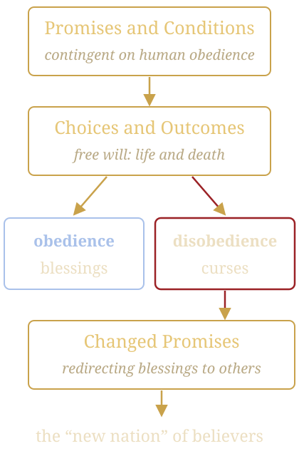

Conditional Covenants and the Forfeited Promises of Ezekiel’s Temple
A Book-by-Book Analysis of God’s Merciful Winnowing: Promises, Conditions, Choices, and Changed Outcomes
✦ ✦ ✦Use the arrow keys or swipe to move. Tap any gold reference to read the verse.
God’s Merciful Winnowing
The Bible reveals God’s redemptive plan through a dynamic interplay of unconditional promises, fulfilled in Christ, and conditional promises, contingent on human obedience, within a merciful winnowing process rooted in His love.
Individual
Judgment by faith.
National
Judgment by works.
This framework distinguishes individual judgment by faith from national judgment by works, emphasizing God’s longsuffering, free will, and clear presentation of choices between life and death.
I call heaven and earth to record this day against you, that I have set before you life and death, blessing and cursing: therefore choose life, that both thou and thy seed may live:Deuteronomy 30:19
Foreknowledge and the “New Nation”
God’s foreknowledge () enables Him to offer conditional promises, respecting human choices, while adapting His plan when conditions are unmet, redirecting blessings to others, such as the “new nation” of believers ().
This article applies this lens in a book-by-book analysis, detailing examples of promises, conditions, human choices, and changed outcomes, expanding on cases like Saul’s loss of a dynasty and Jesus’ lineage, and incorporating additional instances to develop the theory comprehensively.

Unconditional and Conditional
| Promise | Unconditional or conditional |
|---|---|
| A Redeemer | Unconditional, fulfilled in Christ |
| Abraham’s Covenant | The salvation aspect is unconditional ; the land’s immediate possession requires obedience |
| Deliverance from Egypt and Canaan | The condition is covenantal obedience |
| Saul’s dynasty | The condition is obedience |
| The Davidic Covenant | Unconditional in Christ but conditional for immediate blessings |
| Jeroboam’s dynasty | The condition is obedience |
| Ezekiel’s temple and land | Contingent on repentance |
| The New Covenant | Unconditional in Christ’s priesthood |
| The millennial kingdom | Unconditional for believers but conditional for nations |
The Foundation of Winnowing
Genesis establishes God’s pattern of offering conditional promises alongside human free will. After the Fall, God promises a Redeemer (), an unconditional promise fulfilled in Christ. However, other promises are conditional:
Cain’s Offering
God promises acceptance if Cain obeys (). The condition is a right sacrifice, reflecting faith and obedience.
Abraham’s Covenant
God promises a great nation and land (). While the salvation aspect is unconditional (), the land’s immediate possession requires obedience.
If thou doest well, shalt thou not be accepted? and if thou doest not well, sin lieth at the door. And unto thee shall be his desire, and thou shalt rule over him.Genesis 4:7
Genesis: Choices and Outcomes
Changed Promises: Cain’s forfeiture shifts the godly line to Seth (). Abraham’s delay does not nullify the covenant but postpones its realization, requiring further obedience (). Lot’s descendants, Moab and Ammon (), receive no covenantal blessing, illustrating God’s redirection.
National Promises and Individual Choices
God promises to deliver Israel from Egypt and give them Canaan (). The condition is covenantal obedience:
Now therefore, if ye will obey my voice indeed, and keep my covenant, then ye shall be a peculiar treasure unto me above all people: for all the earth is mine:Exodus 19:5
Moses’ Leadership
God promises Moses the privilege of leading Israel into Canaan (). The condition is unwavering obedience.
Pharaoh’s Opportunity
God offers Pharaoh multiple chances to release Israel, with warnings of plagues ().
Exodus: Choices and Outcomes
Changed Promises: Pharaoh’s rejection elevates Israel as God’s chosen nation. Israel’s failures delay the promise, foreshadowing Kadeshbarnea. Moses’ disqualification shifts leadership to Joshua (), illustrating personal winnowing within God’s plan.
Priesthood and National Holiness
God promises Israel a holy status if they obey His laws (). The priesthood is conditionally offered to the firstborn, later specified to Levi (), based on faithfulness.
Changed Promises: The priesthood shifts from the firstborn to Levi (), a national winnowing. Nadab and Abihu’s forfeiture narrows the priesthood within Levi, illustrating God’s precision in judging works.
Forfeiture of the Promised Land
God reaffirms the land promise (), conditioned on trust and obedience. The spies’ mission tests Israel’s faith.
Because all those men which have seen my glory, and my miracles, which I did in Egypt and in the wilderness, and have tempted me now these ten times, and have not hearkened to my voice; Surely they shall not see the land which I sware unto their fathers, neither shall any of them that provoked me see it:Numbers 14:22-23
That generation dies in the wilderness ().
Changed Promises: The land promise is delayed to the next generation under Joshua (). Korah’s line is excluded from priesthood, reinforcing Levi’s role.
Clear Choices and National Judgment
God outlines blessings for obedience and curses for disobedience (). summarizes:
I call heaven and earth to record this day against you, that I have set before you life and death, blessing and cursing: therefore choose life, that both thou and thy seed may live:Deuteronomy 30:19
Changed Promises: The promise persists for future generations, but national disobedience leads to exile, redirecting blessings to a remnant ().
Fulfillment and Continued Conditions
The land promise is fulfilled. Continued possession requires obedience ().
And the Lord gave unto Israel all the land which he sware to give unto their fathers; and they possessed it, and dwelt therein. And the Lord gave them rest round about, according to all that he sware unto their fathers: and there stood not a man of all their enemies before them; the Lord delivered all their enemies into their hand. There failed not ought of any good thing which the Lord had spoken unto the house of Israel; all came to pass.Joshua 21:43-45
Changed Promises: The land is secured, but incomplete obedience plants seeds for future judgment, redirecting full blessing to a faithful remnant.
Cycles of Disobedience and Mercy
God promises deliverance if Israel repents (). Obedience is the condition for peace.
Changed Promises: Deliverance is temporary, redirecting God’s plan to a monarchy ().
Saul’s Forfeited Lineage
God promises Saul a lasting dynasty. The condition is obedience, with the potential for Saul’s line to include the Messiah.
And Samuel said to Saul, Thou hast done foolishly: thou hast not kept the commandment of the Lord thy God, which he commanded thee: for now would the Lord have established thy kingdom upon Israel for ever.1 Samuel 13:13
Changed Promises: The Messianic lineage shifts to David (), fulfilling the Davidic Covenant ().
Saul and Michal
And Samuel said unto Saul, I will not return with thee: for thou hast rejected the word of the Lord, and the Lord hath rejected thee from being king over Israel.1 Samuel 15:26
Therefore Michal the daughter of Saul had no child unto the day of her death.2 Samuel 6:23
David’s Forfeited Temple
God permits David to plan the temple (), conditioned on personal holiness. The Davidic Covenant promises an eternal throne (), unconditional in Christ but conditional for immediate blessings.
Changed Promises: Solomon builds the temple (), and the Messianic promise persists through David’s line ().
Jeroboam’s Lost Dynasty
God promises Jeroboam a dynasty like David’s. The condition is obedience.
And it shall be, if thou wilt hearken unto all that I command thee, and wilt walk in my ways, and do that is right in my sight, to keep my statutes and my commandments, as David my servant did; that I will be with thee, and build thee a sure house, as I built for David, and will give Israel unto thee.1 Kings 11:38
Therefore, behold, I will bring evil upon the house of Jeroboam, and will cut off from Jeroboam him that pisseth against the wall, and him that is shut up and left in Israel, and will take away the remnant of the house of Jeroboam, as a man taketh away dung, till it be all gone.1 Kings 14:10
Changed Promises: The promise shifts to Judah’s line, preserving David’s dynasty ().
Northern Kingdom’s Exile
God promises protection if Israel obeys (). Idolatry violates this ().
Changed Promises: Blessings redirect to Judah, then to a remnant ().
Judgment of Nations by Works
God promises judgment on nations based on works (). Israel’s restoration is conditional:
If ye be willing and obedient, ye shall eat the good of the land:Isaiah 1:19
Changed Promises: A remnant returns (), foreshadowing the “new nation” ().
Reprobate Silver
God promises restoration if Judah repents:
Thus saith the Lord of hosts, the God of Israel, Amend your ways and your doings, and I will cause you to dwell in this place.Jeremiah 7:3
Reprobate silver shall men call them, because the Lord hath rejected them.Jeremiah 6:30
Changed Promises: A remnant is preserved (), redirecting to the New Covenant ().
Forfeited Temple and Land
Ezekiel 40-48 promises a restored temple and land, contingent on repentance. The land allotment is conditional ().
Thou son of man, shew the house to the house of Israel, that they may be ashamed of their iniquities: and let them measure the pattern. And if they be ashamed of all that they have done, shew them the form of the house, and the fashion thereof, and the goings out thereof, and the comings in thereof, and all the forms thereof, and all the ordinances thereof, and all the forms thereof, and all the laws thereof: and write it in their sight, that they may keep the whole form thereof, and all the ordinances thereof, and do them.Ezekiel 43:10-11
Changed Promises: The temple’s role is fulfilled spiritually (), and land promises redirect to believers ().
Edom’s Judgment by Works
Edom faces judgment for violence:
For thy violence against thy brother Jacob shame shall cover thee, and thou shalt be cut off for ever.Obadiah 10
Changed Promises: Israel’s remnant inherits Edom’s land (), redirecting blessings.
Nineveh’s Temporary Repentance
God promises Nineveh’s destruction unless they repent:
And Jonah began to enter into the city a day’s journey, and he cried, and said, Yet forty days, and Nineveh shall be overthrown.Jonah 3:4
Changed Promises: God’s mercy delays judgment, but Nineveh’s works determine their fate.
Conditional Eschatology
promises a kingdom “if ye will diligently obey.” ties worship to blessing, with judgment for noncompliance.
And they that are far off shall come and build in the temple of the Lord, and ye shall know that the Lord of hosts hath sent me unto you. And this shall come to pass, if ye will diligently obey the voice of the Lord your God.Zechariah 6:15
Changed Promises: Blessings redirect to the “new nation” ().
Kingdom Offer Rejected
Jesus offers the kingdom, conditioned on repentance.
From that time Jesus began to preach, and to say, Repent: for the kingdom of heaven is at hand.Matthew 4:17
Then answered all the people, and said, His blood be on us, and on our children.Matthew 27:25
Changed Promises: The kingdom is given to a “new nation” ().
Final Rejection
Peter offers restoration ().
Repent ye therefore, and be converted, that your sins may be blotted out, when the times of refreshing shall come from the presence of the Lord;Acts 3:19
Ye stiffnecked and uncircumcised in heart and ears, ye do always resist the Holy Ghost: as your fathers did, so do ye.Acts 7:51
Changed Promises: The gospel goes to the Gentiles (), forming the “new nation” ().
New Covenant Nation
describes Gentiles grafted into Israel’s promises, conditioned on faith ().
Changed Promises: The “new nation” inherits spiritual promises ().
Superior Covenant
The New Covenant replaces the old, unconditional in Christ’s priesthood ().
In that he saith, A new covenant, he hath made the first old. Now that which decayeth and waxeth old is ready to vanish away.Hebrews 8:13
Changed Promises: Christ’s sacrifice ends OT ordinances, redirecting to believers ().
Millennial Fulfillment
A millennial kingdom is promised (), unconditional for believers but conditional for nations ().
Changed Promises: The eternal state follows (), fulfilling all promises in Christ.
Forfeited and Redirected
| Forfeited | Redirected to |
|---|---|
| Cain | The godly line through Seth |
| The firstborn | The priesthood to Levi |
| Nadab and Abihu | Eleazar and Ithamar |
| Moses | Leadership to Joshua |
| That generation | The next generation under Joshua |
| Saul | The Messianic lineage to David |
| David, building the temple | Solomon builds the temple |
| Jeroboam | Judah’s line, preserving David’s dynasty |
| The Northern Kingdom | Judah, then a remnant |
| Edom | Israel’s remnant inherits Edom’s land |
| Israel | The kingdom is given to a “new nation” |
Conclusion
This book-by-book analysis demonstrates God’s merciful winnowing, offering conditional promises, respecting free will, and adapting His plan when conditions are unmet.
From Cain’s rejection to Israel’s forfeiture of Ezekiel’s Temple, God’s love provides clear choices (), repeated opportunities (), and judgments based on faith for individuals and works for nations.
The fulfilled land promise () and redirected blessings to the “new nation” () refute alternative views, affirming God’s sovereignty () and desire for all to choose life.